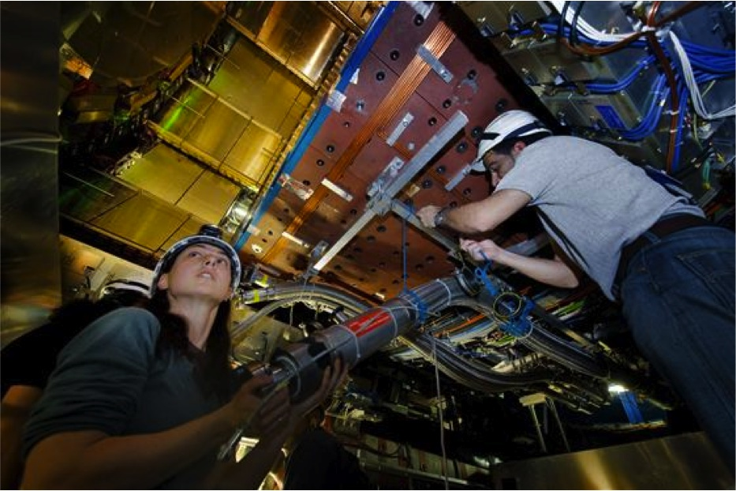
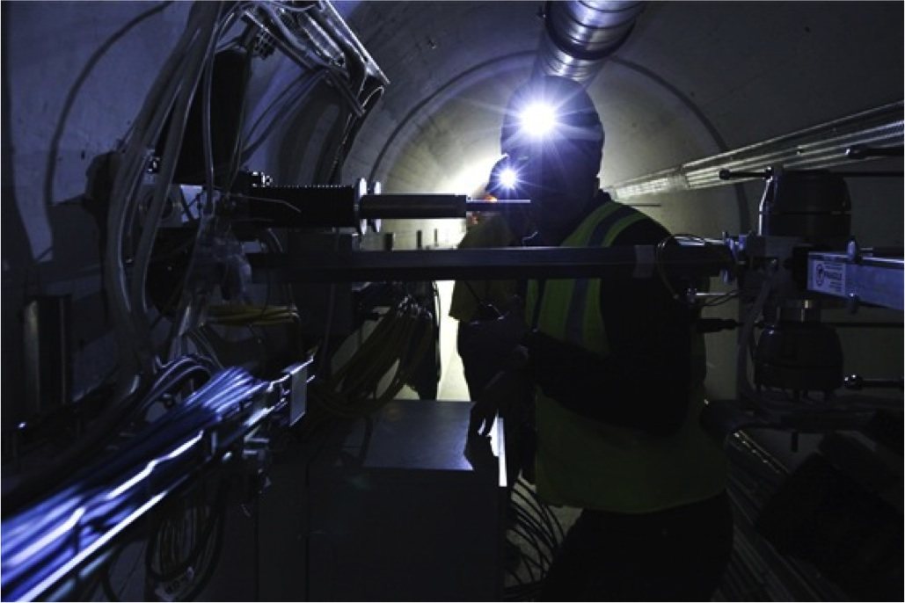

The scientific objective of this project is research into advanced augmented and virtual reality technologies for a personnel safety system platform, including features, methods and tools. The aim is to technically advance and combine several technologies and integrate them as integral part of a personnel safety system to improve safety, reduce errors and decrease the time needed for scheduled or sudden interventions
The research challenges lie in the development of real-time (with time-lags less than human interaction speed) data-transmission, instantaneous analysis of data coming from different inputs (vision, sensors), interaction with multiple on-site users, complex interfaces, portability and wearability, wear/tear.
The result will be an integrated wearable VR/AR system (+control system), which can be implemented and tested as a prototype in CERN's existing LHC Personnel Safety System.
The research in EDUSAFE is grouped into 4 different Work Packages.
This WP focuses on WRM (Weighting Resistor Matrix) chip development, which consists of a short-term phase where the software driven methods, that could provide a sufficient Augmented Reality support to the Personal Supervision System (PSS), are optimized. Also the possibilities for hardware acceleration by means of the WRM system will be studied as a future capability.
WP3 focuses on studying the scalability and adaptability potential of the hardware and the software of the PSS module, the Control System and the Data Acquisition system for other markets and different types of environment. Focus is also on the safety system modularity and integration aspects.
WP4 concentrates on enhancement of the safety system by integrating the gamma radiation imaging features together with the associated dose rates calculation codes. WP4 will also focus on designing and setting up a flexible 3D display infrastructure and on developing new methods of human-machine -interaction and user interface commands.
WP5 studies how a technology prototype, in this case prepared for the CERN extreme environment, can be transferred to other industry sectors and how to develop and introduce a planning tech-development strategy, which incorporates possible technology transfer potential from the start.
